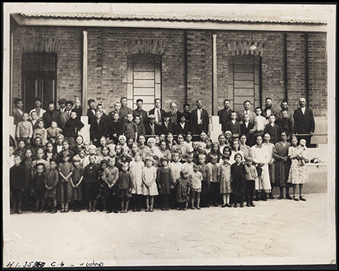
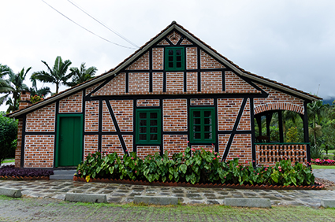
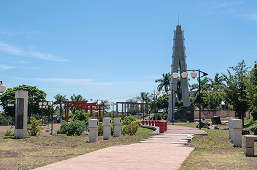
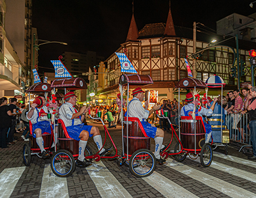

Imigrantes alemães em frente à Hospedaria de Imigrantes na cidade de São Paulo (SP), em 1900. Crédito: MUSEU DA IMIGRAÇÃO, SÃO PAULO

Construção em estilo enxaimel localizada no município de Pomerode (SC), em 2021. Esse tipo de construção simboliza a presença da colonização alemã no Brasil. Crédito: KLEYTON KAMOGAWA/SHUTTERSTOCK.COM

Os japoneses estão entre os povos que participaram da colonização da Região Sul do Brasil. A fotografia mostra a praça Tomi Nakagawa em Londrina (PR), em 2018. Essa praça foi inaugurada em 2008, em homenagem aos 100 anos da imigração japonesa no país. Crédito: VINICIUS BACARIN/SHUTTERSTOCK.COM

Na Região Sul, diversas manifestações culturais são promovidas por descendentes de imigrantes, como a Oktoberfest retratada na fotografia de 2021. Essa festa típica é realizada anualmente pelos descentes de alemães na cidade de Blumenau (SC). Crédito: BY BRAZIL/SHUTTERSTOCK.COM